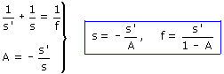
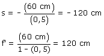

Si la imagen está derecha y su tamaño es la mitad A = 1/2 Una imagen derecha es virtual, tendrá que estar detrás del espejo, luego s' = 60 cm Datos: s' = 60 cm, A = 1/2   El foco está 120 cm a la derecha del vértice del espejo, luego el centro está 240 cm a la derecha. El radio del espejo vale 240 cm. Construcción gráfica |